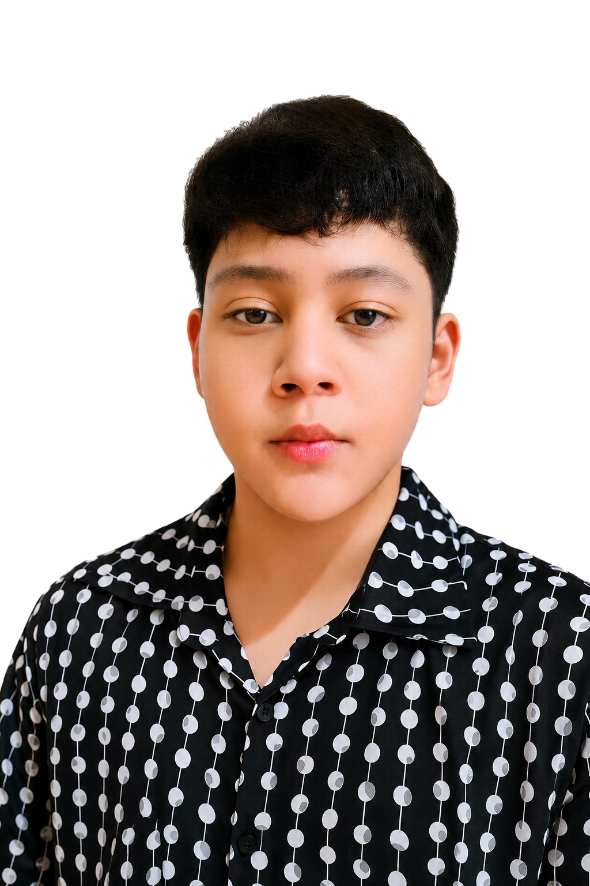

Website Development
Responsive websites, landing pages, contact forms, dashboards, login systems, galleries, admin panels, deployment, hosting setup, optimization, and troubleshooting.
I'm a Junior Web Developer
I build responsive websites, develop and maintain Discord systems, troubleshoot computers and networks, and support clients with dependable digital work. I bring hands-on technical experience, transparent communication, and a strong willingness to learn.

I am an Information Technology student at STI College of San Jose Del Monte and an independent freelancer with practical experience in website development, IT support, computer maintenance, Discord bot systems, SQL databases, FiveM and Roblox assets, and graphic design.
My freelance work has mainly come from Discord, gaming communities, referrals, and friends. Clients value my fast updates, transparent progress, reasonable pricing, patience with revisions, and focus on delivering what was requested. I am now expanding into entry-level Digital Assistant and Virtual Assistant work where I can apply my strengths in email management, research, data entry, reports, spreadsheets, file organization, website updates, and customer chat support.
Services are tailored to the project. Pricing is provided through a custom quotation after reviewing the requirements.
Responsive websites, landing pages, contact forms, dashboards, login systems, galleries, admin panels, deployment, hosting setup, optimization, and troubleshooting.
PC assembly, cleaning, component replacement, Windows and driver installation, malware and bloatware removal, performance optimization, and hardware troubleshooting.
Custom bots, slash commands, ticket and whitelist systems, role management, logging, dashboards, database connections, hosting, dependency updates, and maintenance.
Email management, data entry, online research, file organization, spreadsheet updates, document formatting, client updates, customer chat support, and website updates.
SQL table creation, record editing, queries, imports and exports, database connections, troubleshooting, automated Excel calculations, dashboards, charts, and summaries.
Vehicle liveries, clothing textures, vehicle metadata, sounds and tuning, YTD/YDR editing, custom clouds, Roblox vehicle textures, logos, banners, and promotional visuals.
Independent freelance work, paid technical services, academic projects, and continuous hands-on learning.
Explore website builds, Discord systems, hands-on IT work, FiveM assets, and a functional SQL reporting demonstration.
Five website examples covering gaming communities, business, fitness, e-commerce, and personal branding.
View case studyA dashboard for controlling, monitoring, configuring, and documenting a network of community bots.
View case studyPC assembly, cleaning, component inspection, maintenance, troubleshooting, optimization, and remote-work setup.
View case studyCustom cars, fleet packs, emergency vehicles, tactical assets, branded liveries, and in-game presentations.
View case studyProduct categories, promotional hero content, shop navigation, product details, trust indicators, and support messaging.
View case studyA functional searchable dashboard paired with a MySQL schema, relational tables, sample data, joins, and reporting queries.
Open working demoFor job opportunities, freelance projects, technical support, or collaboration, send a clear message describing the requirements and preferred timeline.
{kind=link}
{kind=link}
{kind=link}
{kind=link}
{kind=link}
{kind=link}